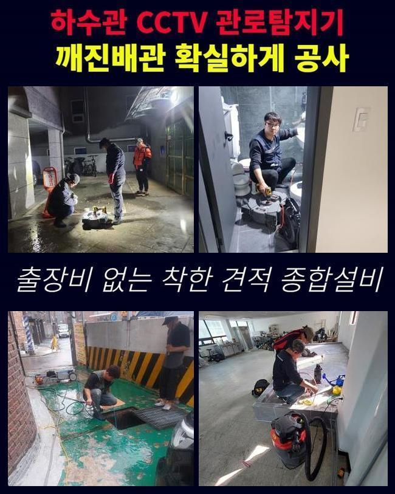
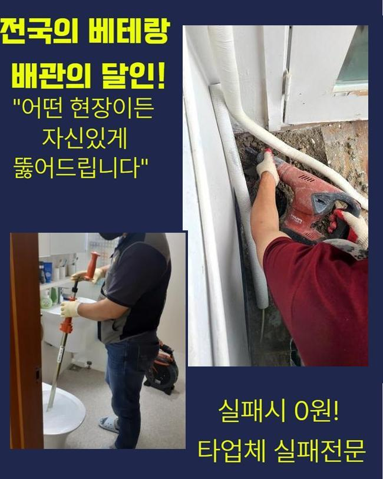
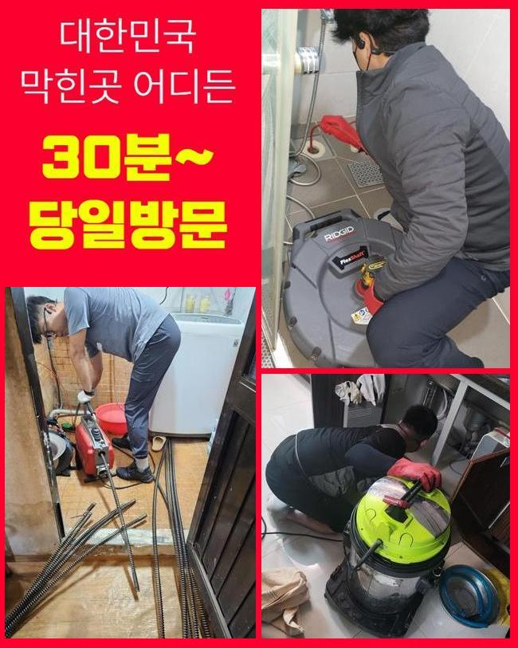
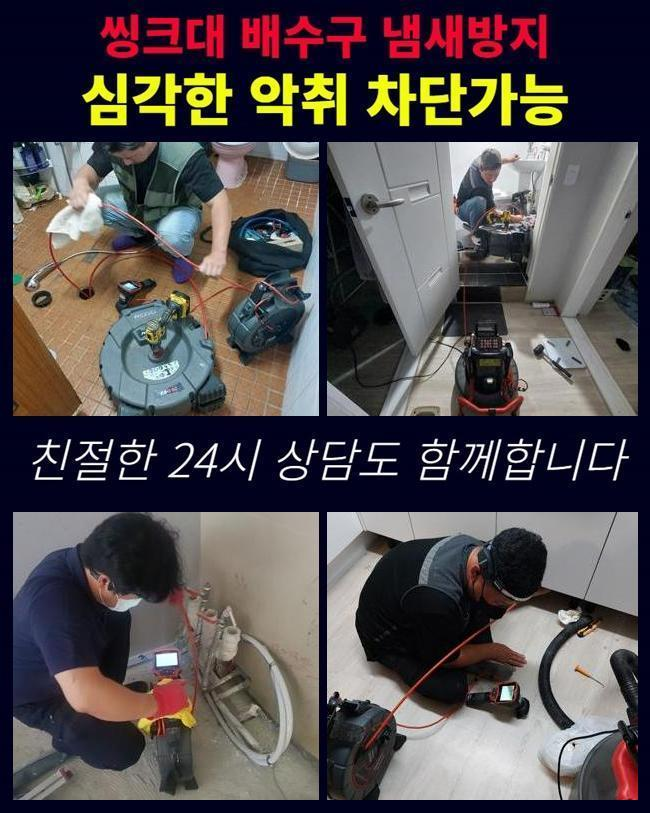
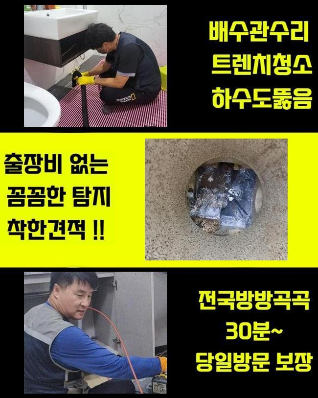

🏠 안양 박달1동욕실막힘 맨홀막힘 누수
안양 하수구막힘 전문 시공 후기

📋 작업 개요
- 위치: 안양
- 서비스 유형: 하수구막힘, 배관막힘, 맨홀막힘, 누수수리, 배관청소, 고압세척, 배관보수, 악취차단
- 작업 일시: 2025. 1. 22. 11:02
- 업체명: 하수구수사대 (010-5615-2118)
🔍 문제 상황
안양 박달1동욕실막힘 맨홀막힘 누수
생활하수를 활용하다보면 많은 동기로 인해서 관로에 노폐물들이 겹겹이 쌓여갈 수 있습니다
이렇게 오물이 더해지면 마치 철옹성같이 접착이 되어버릴 수 있어서 이탈시키는 것도 난관입니다
벽체에 부착되어 있는 오물을 걷어내려고 배관에 무리를 주다가는 배관 크랙이나 누수까지 되는 전례없는 일도 생깁니다
문제점이 선명하게 보이는 그러한 상황이라고 해도 적절한 기능을 갖춘 장치들을 통합해서 진행해야 그 어떤 장애도 없이 안정적으로 배수구를 회복시킬 수 있습니다
고객님 선에서 처리를 한다면 전체적인 문제를 모조리 잡아내기 힘들고 큰 보람이 없을 것입니다
이번에 찾았던 작업장은 한 가정이 거주하고 계셨는데 하수가 막히고 범람해서 엄청난 고충을 겪고 있어서 다급하게 고쳐달라고 넣어주신 곳이었습니다
지체하는 시간을 줄이고 필요한 장치들을 갖추고 초인종을 눌렀습니다
막힌 장소로 안내받아서 확인하니 물이 고인 바닥의 배수구 저 밑에서 하수가 분출되는 상황이더라고요
고심하시다가 혹시나하는 마음으로 셀프 클리너를 부어서 관통해보려 하셨지만 크게 개선되지는 않아서 답답했다고 하셨네요

🔎 원인 분석
💡 전문가 진단: 정밀 진단 장비를 사용하여 슬러지의 고착 여부를 판명하고 타격/세척 작업을 실시했습니다.
속의 하수도 치고올라오니 냄새까지 진동을 하다보니 벽지와 가구에 냄새가 베이는 등 시간을 보내고 계셨다고 합니다
고질적인 하수구 불통을 철저히 탈피하기 위해선 내부에 자리한 어떤 문제로 하수관 관련한 문제점이 도래한 것인지 분명한 디테일을 파악해야 합니다
그러므로 사전에 내부 관측을 돕는 내시경 기기를 안으로 보내어 관로 안을 스캔해봤습니다
내시경이 비춰주는 화면을 보며 세세하게 관측해보니 특정 영역에 집중하여 유분이 꽉 차게 모인 대상물이 주범이라고 결론 내릴 수 있었어요
하나의 덩어리화가 된 유분 덩어리를 물리력으로 분리하려고 시도하면 배관에 크고작은 생채기가 일어날 위험성이 도사리고 있습니다
맞춤으로 오물을 없애는 전문 기기를 활용하는 게 자극없이 고치는 방법입니다
작업 전의 탐색 절차를 통해서 알아낸 정보들을 고객님께도 투명하게 공개를 해드리고 세척을 위한 장치를 별도로 작동해 주었습니다
고압수를 통한 하수구 정화가 들어갔는데 기본적인 내부 정화가 됐다 싶을 때 한번 내시경이 비춰주는 화면을 보며 순조로운 진행이 됐나 확인했어요
꿈쩍 않던 하수가 움직이는 것을 발견했지만 여전히 청소가 필요한 구간들이 식별되어 계속 임하고 있던 고압세척 작업에 돌입했어요
밀집된 기름덩어리가 풀리고 시원스럽게 길이 열렸음을 최종으로 보고서 절차를 마치게 됐어요

🔧 작업 과정
종료를 앞두고도 검토를 실시해보니 정체되어 있던 유분층들이 모두 소멸되어서 파이프 안이 화사하게 밝아진 상황이란 걸 알 수 있었어요
관로의 이곳 저곳에서 강하게 응고되어 있었던 기름덩어리의 존재감이 초반에는 대단했는데 스케일링 장비를 추가로 투입하지 않고도 하수구가 말끔하게 완치되어서 시간을 아낄 수 있었어요
만일 이와 같은 슬러지가 아니고 석회때문에 흐름의 차단이 일어났다면 단순한 절차로는 종결되지 않아요
커다란 석회 침전물이 굳건히 자리를 지켜고 있으면 본 세정작업에 착수하기 전에 유연하게 연화작업을 해 줄 약물을 주입해야 합니다
묽게 만드는 액상을 넣고 기다린다면 겉으로 흰 거품이 나오게 되는데 미지근한 물을 더하면서 습기를 더한다면 해체가 이루어지면서 치우기 쉽게 묽어집니다
하수구 석회 분해제는 평범한 사람들이 가볍게 살 수 없으므로 석회가 자리한다는 사실을 인지하셨으면 혼자가 아닌 전문공에게 의뢰를 해야 만족을 얻을 수 있을 겁니다
단순한 배관 청소제로 셀프로 처리하려 시도하는 사람도 있겠지만 장애물이 석회인 상황이면 일반 클리너로는 미처 해결하지 못해요
배수로가 막히는 사태는 복합적인 이유가 있으니 본단계부터 착공하는 게 아니라 먼저 카메라 장치를 써서 가로막힌 쪽들이 어딘지 검토해야만 시원스럽게 배관로를 닦아낼 수 있습니다!
불빛을 바깥에서 비춰보더라도 여러 갈래길로 나뉘는 배수관의 구조 자체를 판별하기는 어려움이 있어요
내시경 조사 결과를 통해 관로를 조사하는 단계가 더욱 중요한 것입니다
하수의 흐름상의 문제는 며칠만에 생기는 현상이 아니고 오래 시설이 작동하면서 여러 찌꺼기와 기름질들이 꾸준히 쌓이게 되어 강력한 덩어리로 변성될 수 있습니다
아예 막혀버리지 않게 철저히 케어하는 게 정답인데 사례를 들자면 정례적으로 온수를 배수구 방향으로 부어서 자리를 잡으려는 오물들이 녹아서 해체되도록 신경쓰는 게 좋습니다
베스트는 이물질들이 깊숙이 자리하지 않도록 미세한 그물이나 필터를 뚜껑에 달아주는 게 안심되는 조치입니다
거주 목적의 가정집을 비롯해 단체 시설이나 센터 등 어떤 용도로든 물을 쓴다면 이와 같은 하수구에 대한 사태를 직면할 수 있습니다
초반의 막힘 징후를 목격하신 분이시라면 악화되기 이전에 빠른 조치로 개선해야 합니다
막힘이 심화되다보면 잔수가 역 배출되어서 벌레나 악취와 같은 사태까지 이르게 됩니다


✅ 작업 완료
견디지 못한 관로에 균열이 생기면 밑층 세대까지도 악영향이 피어 오를 수 있고 사후처리를 하기 위한 지출까지 본인이 지불해야 할 것입니다
배관 장애물이 형성되지 않도록 각별히 검열하면서 사용 하는 게 최선입니다!
신중하게 하수구 활용 절차를 지켜도 잘 쓰다가도 갑작스레 막힘이 필연적으로 생길 때가 있습니다
섣부르게 대응하지 마시고 저희에게 고장난 하수구에 대한 보수를 요청주시기 바랍니다


⚠️ 베란다 누수 및 방수 관리 방법
- ✅ 비가 많이 올 때 창틀 주변이나 아래층 천장에 얼룩이 생기는지 정기적으로 확인해 보세요.
- ✅ 우수관 주변 실리콘 마감이 들뜨거나 깨진 틈새가 있는지 손상 여부를 수시로 체크하세요.
- ✅ 베란다 바닥 타일의 줄눈(메지)이 소실되면 그 틈으로 물이 침투하여 누수가 유발됩니다.
- ✅ 누수 의심 증상 발견 시 방치하면 아래층 손실이 커지므로 즉시 전문가의 진단을 받으십시오.
💡 핵심 정리
- 확실한 장비 작업(내시경 점검 및 샤프트 스케일링)으로 원인을 뿌리 뽑습니다.
- 작업 후 1년 이내에 동일한 부위 재발 시 100% 무상 A/S 서비스를 보장합니다.
- 서울 · 경기 · 인천 전 지역에 24시간 언제든 긴급 출동할 수 있도록 항시 대기 중입니다.
❓ 자주 묻는 질문 (FAQ)
🚨 안양 하수구막힘 문제로 고민이신가요?
정확한 원인 진단과 확실한 시공으로 재발 없는 해결을 약속드립니다.
24시간 긴급 출동 | 서울 · 경기 · 인천 전지역 | 1년 내 재발 시 무상 A/S